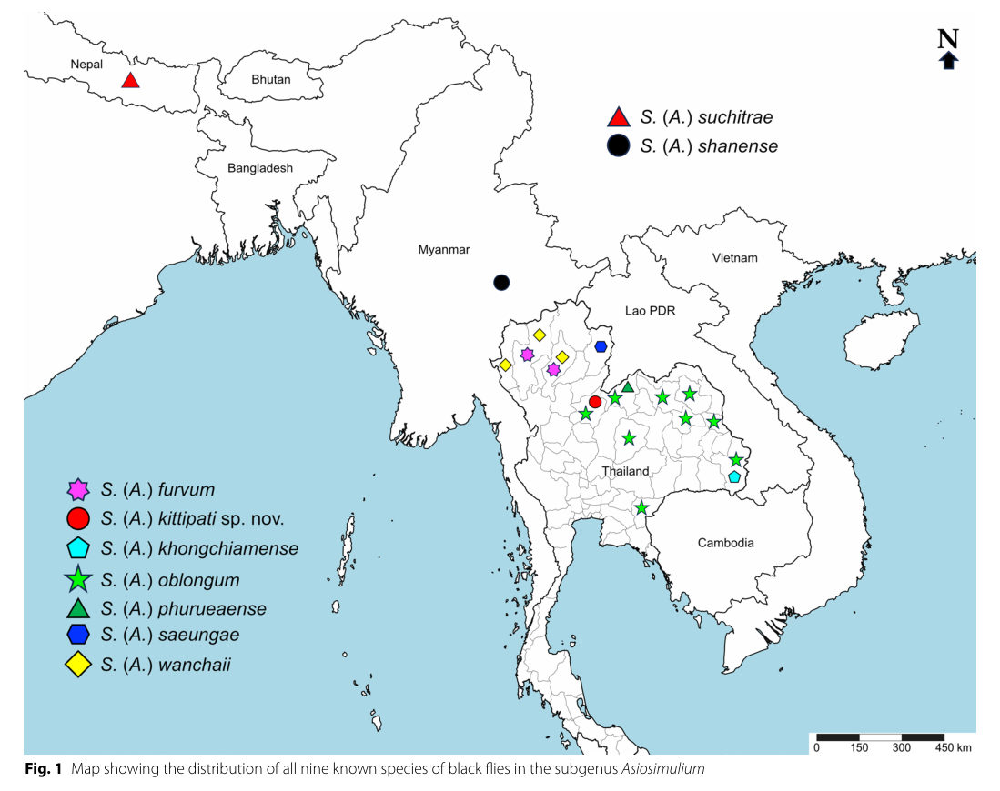

Species › Simulium › Asiosimulium
Simulium shanense
| Classification | Genus Simulium, subgenus Asiosimulium |
|---|---|
| Status | valid |
| Distribution | Myanmar (Srisuka et al. 2024) |
| Diagnostic notes | Subgenus Asiosimulium. Female, pupa and larva unknown. Male: hind basitarsus 0.90-1.00x hind tibia, abdominal segments 3-4 and 5-8 each with pair of shiny dorsolateral patches, upper-eye (large) facets in 14 vertical columns and 15 horizontal rows (vs 20 x 21 in S. kittipati), posterior margin of ventral plate slightly concave medially (vs moderately concave in S. kittipati) (Srisuka et al. 2024, pp. 2, 14-16). |
| Sources | Srisuka et al. 2024 |
How it keys out
The chain of characters leading to this taxon in each key (a ready-made diagnosis).
Subgenus Asiosimulium: adult males (Srisuka et al. 2024) – couplet 6a
Figures

